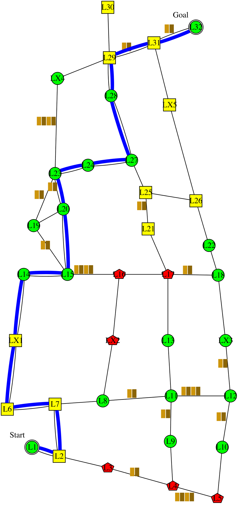
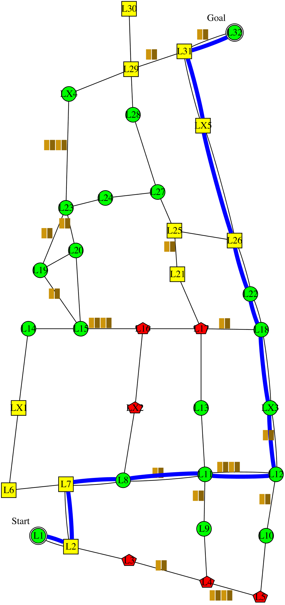

<html>
 <head></head>
 <body></body>
</html>
<link rel="stylesheet" href="https://www.w3schools.com/w3css/4/w3.css">
<div class="w3-container w3-light-grey">
 <div class="w3-container w3-cell w3-center">
  
  <h5>Figure 1</h5>
 </div>
 <div class="w3-container w3-cell">
  <p>I'm planning to follow this policy (see Figure 1). It is expected to have 0.6 collision; take 127 minutes; and have intrusiveness-penalty of 6: be non-intrusive 8 steps, somewhat-intrusive 6 steps, and very-intrusive 0 step. It has the lowest expected intrusiveness.</p>
 </div>
</div>
<div class="w3-container w3-pale-yellow">
 <div class="w3-container w3-cell w3-center">
  
  <h5>Figure 2</h5>
 </div>
 <div class="w3-container w3-cell">
  <p>Alternatively, following this policy (see Figure 2) would reduce the collision to 0.4 collision. However, I didn't choose that policy because it would increase the time to 134 minutes. The decrease in collision is not worth the increase in time.</p>
 </div>
</div>
<div class="w3-container w3-light-grey">
 <div class="w3-container w3-cell w3-center">
  
  <h5>Figure 3</h5>
 </div>
 <div class="w3-container w3-cell">
  <p>Alternatively, following this policy (see Figure 3) would reduce the time to 123 minutes. However, I didn't choose that policy because it would increase the intrusiveness to 8: non-intrusive 6 steps, somewhat-intrusive 5 steps, and very-intrusive 1 step. The decrease in time is not worth the increase in intrusiveness.</p>
 </div>
</div>